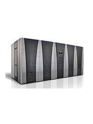

HPE TFinity ExaScale Edition Tape Library Overview:
Meeting enterprise data growth challenges head-on, HPE TFinity® ExaScale Edition Tape Libraries deliver enormous scalability to
keep pace with unpredictable data growth. Choose from a range of base configurations and scale up to over 53,460 tape cartridges
in increments of 10 slots for capacity on demand. Incorporating between 1 and 144 tape drives you can consolidate and store up to
801 PB (compressed 2.5:1) of enterprise data.
Capacity on demand
- Only buy what you need today and add storage capacity as you need it
- Upgrade capacity in intervals of 10 LTO or 9 Enterprise tape slots at a time
- More storage capacity in less floor space
- Tape consolidation through capacity, performance, partitioning and reporting results in a lower total cost of
ownership.
- The HPE TFinity ExaScale Edition supports LTO-6, LTO-7 and TS11x0 Technology. This mixed media support is
available in the same library.
- The HPE Tfinity ExaScale Edition can also support Oracle®T10000x drives and media. T10000x support is
enabled via a field migration service (delivered by Spectra Logic). Please contact your HPE sales contact for more
information